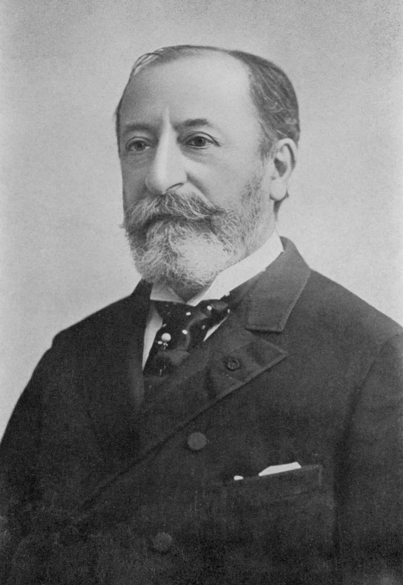

 (París, 1835 - Argel, 1921) Compositor francés. Perdió a su padre cuando contaba solamente cuatro meses, y recibió la primera formación musical de su madre y de una tía; se mostró tan precoz en tal aspecto que a los cinco años pudo ya componer para el piano. Fue confiado entonces a la guía del pianista Stamaty, el cual lo presentó como pequeño virtuoso del piano en 1845.
Estudió órgano con Benoit y composición con Halévy. En 1852 ganó un concurso con una Ode à Sainte Cécile; en 1853 fue nombrado organista de St. Merry, y en el año 1857 alcanzó el mismo cargo en la Madeleine; en 1861 obtuvo la cátedra de piano de la escuela Niedermeyer. Su primera obra teatral, Le timbre d'argent (1864-1865), no pudo llegar a la escena.
Temperamento batallador y enérgico, fundó en 1871 la Société Nationale de Musique, orientada concretamente al fomento de la ejecución y la difusión de la nueva música francesa. La iniciativa, a la cual se adhirieron, entre otros, Édouard Lalo, César Franck, Georges Bizet y Gabriel Fauré, tuvo una gran importancia en sus aspectos de propulsión y organización. En 1872 Camille Saint-Saëns pudo ver finalmente satisfechas sus aspiraciones escénicas: siquiera con escaso éxito, fue representada en la Opéra Comique su obra La princesse jaune.
A esta misma época pertenecen también algunas de las producciones sinfónicas más importantes de Camille Saint-Saëns: los poemas La rueca de Onfalia (1871), Phaéton (1873), Danza macabra (1874) y La jeunesse d'Hercule (1877), en el que puede percibirse una intensa influencia de las obras análogas de Franz Liszt; y los Conciertos segundo, tercero y cuarto para piano, en sol menor (1868), mi bemol mayor (1869) y do menor (1875), cuyo virtuosismo pianístico alcanza un alto nivel de perfección en cuanto a la forma y a la estructura, y de acuerdo con esquemas imponentes y grandiosos, pero generalmente poco profundos.
La infatigable actividad creadora de Saint-Saëns abarca todos los campos de la música y todas las combinaciones instrumentales y vocales posibles. Sin embargo, su gran aspiración fue siempre el teatro. Le dio ocasión a ello Liszt, su gran admirador, quien promovió en Weimar la representación de Sansón y Dalila, celebrada el 2 de diciembre de 1877; se trata de la mejor obra del músico, tanto por su vigoroso planteamiento como por la fuerza de los coros y la amplitud descriptiva del ambiente, y es la única aún hoy representada.
Cuanto posteriormente compusiera Saint-Saëns presenta bien un valor académico y formal, siquiera siempre dentro de una cuidadosa dignidad de construcción -así, Henri VIII (1883), Ascanio (1890), Déjanire (1898), los dos Conciertos para violín en do mayor y si menor (1879 y 1880), la Sinfonía en do menor con órgano y dos pianos (1886), y el quinto Concierto para piano (1895)-, o bien meramente descriptivo y agradable, como en la "fantasía zoológica" El carnaval de los animales (1886).
Durante las últimos años de su vida Saint-Saëns fue interesándose cada vez más por la música popular árabe; pero su producción no anduvo, en este ámbito, más allá de un genérico orientalismo amanerado. Acariciado por el honor y la fama, terminó casi repentinamente sus días en Argel, donde pasaba el invierno desde hacía ya algunos años, poco después de la Primera Guerra Mundial, época en que figuraba entre los nacionalistas más ardientes. Notables son también los artículos que publicó durante su vida en diversos periódicos y revistas, reunidos en los volúmenes Harmonie et mélodie, Portraits et souvenirs y, singularmente, École buissonnière.
{kind=link}